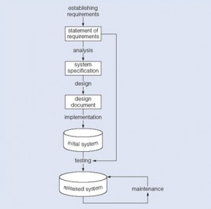
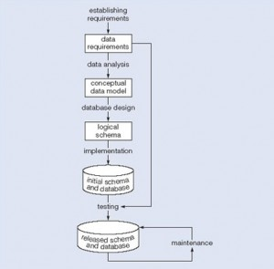
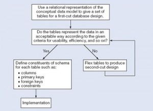

The Database Development Process
عملية تطوير قاعدة البيانات
المتن الرئيسي
Key Terms
analysis: starts by considering the statement of requirements and finishes by producing a system specificationbulk load: the transfer of large quantities of existing data into a database
data requirements document:used to confirm the understanding of requirements with the user
design: begins with a system specification, produces design documents and provides a detailed description of how a system should be constructed
establishing requirements: involves consultation with, and agreement among, stakeholders as to what they want from a system; expressed as a statement of requirements
flexing: a term that captures the simultaneous ideas of bending something for a different purpose and weakening aspects of it as it is bent
implementation: the construction of a computer system according to a given design document
maintenance: involves dealing with changes in the requirements or the implementation environment, bug fixing or porting of the system to new environments
requirements gathering: a process during which the database designer interviews the database user to understand the proposed system and obtain and document the data and functional requirements
second-cut designs:the collection of iterations that each involves a revision of the tables that lead to a new design
software development life cycle (SDLC): the series of steps involved in the database development process
testing: compares the implemented system against the design documents and requirements specification and produces an acceptance report
waterfall model: shows the database development process as a strict sequence of steps where the output of one step is the input to the next
waterfall process: a means of identifying the tasks required for database development, together with the input and output for each activity (see waterfall model)
يعدّ تقسيم عملية التطوير إلى سلسلة من المراحل أو الخطوات، كل منها تركّز على جانب واحد من جوانب التطوير، أحد المبادئ الأساسية في هندسة البرمجيات. وتُشار إلى مجموعة هذه الخطوات أحيانًا بدورة حياة تطوير البرمجيات (software development life cycle, SDLC). ويمرّ منتج البرمجيات عبر دورة الحياة هذه (أحيانًا مرارًا كلما جرى تحسينه أو إعادة تطويره) حتى يُسحب نهائيًا من الخدمة. ومن الناحية المثلى، يمكن التحقق من صحة كل مرحلة في دورة الحياة قبل الانتقال إلى المرحلة التالية.
Exercises
Describe the waterfall model. List the steps.
What does the acronym SDLC mean, and what does an SDLC portray?
What needs to be modified in the waterfall model to accommodate database design?
Provide the iterative steps involved in database design.
دورة حياة تطوير البرمجيات – الشلال
لنبدأ بنظرة عامة على نموذج الشلال (waterfall model) كما تجده في معظم مراجع هندسة البرمجيات. يوضّح شكل الشلال هذا، المبيَّن في الشكل 13.1، نموذج شلال عامًا يمكن أن ينطبق على تطوير أي نظام حاسوبي. وهو يُظهر العملية بوصفها تسلسلًا صارمًا للخطوات، حيث يكون ناتج كل خطوة هو مُدخل التي تليها، ويجب إكمال الخطوة بالكامل قبل الانتقال إلى التي تليها.

يمكننا استخدام عملية الشلال وسيلة لتحديد المهام المطلوبة، مع مُدخل كل نشاط ومُخرجه. والمهم هنا هو نطاق الأنشطة، ويمكن تلخيصه كالتالي:
- يتطلب تحديد المتطلّبات (requirements) التشاور مع أصحاب المصلحة (stakeholders) والاتفاق فيما بينهم بشأن ما يريدونه من نظام، ويُعبَّر عن ذلك في بيان متطلّبات.
- يبدأ التحليل (analysis) بالنظر في بيان المتطلّبات وينتهي بانتجاج مواصفة نظام (system specification). والمواصفة هي تمثيل رسمي لما ينبغي أن يفعله النظام، معبَّرًا عنه بمصطلحات مستقلة عن كيفية تحقيقه.
- يبدأ التصميم (design) بمواصفة النظام، وينتج مستندات التصميم، ويقدّم وصفًا تفصيليًا لكيفية ينبغي أن يُبنى النظام.
- التنفيذ (implementation) هو بناء نظام حاسوبي وفقًا لمستند تصميم معيّن، مع مراعاة البيئة التي سيعمل فيها النظام (مثل عتاد أو برمجيات محددة متاحة للتطوير). وقد يكون التنفيذ على مراحل، عادةً بنظام مبدئي يمكن التحقق من صحته واختباره قبل إصدار نظام نهائي للاستخدام.
- يقارن الاختبار (testing) النظام المنفَّذ مع مستندات التصميم ومواصفة المتطلّبات، وينتج تقرير قبول أو، وهو الأغلب، قائمة أخطاء وعلل تتطلب مراجعة عمليات التحليل والتصميم والتنفيذ لتصحيحها (والاختبار هو المهمة التي تؤدي عادةً إلى جعل نموذج الشلال يكرّر دورته عبر دورة الحياة).
- تتضمن الصيانة (maintenance) التعامل مع التغيّرات في المتطلّبات أو بيئة التنفيذ، وإصلاح العلل، أو نقل النظام إلى بيئات جديدة (مثل ترحيل نظام من حاسوب شخصي مستقل إلى محطة عمل UNIX أو إلى بيئة شبكية). ولأن الصيانة تتضمن تحليل التغيّرات المطلوبة، وتصميم الحل، وتنفيذه واختباره طوال عمر نظام برمجيات مُصان، فإن دورة حياة الشلال ستُراجَع مرارًا وتكرارًا.
دورة حياة قاعدة البيانات
يمكننا استخدام دورة الشلال أساسًا لنموذج تطوير قاعدة البيانات يضم ثلاثة افتراضات:
- يمكننا فصل تطوير قاعدة البيانات — أي مواصفة مخطط وإنشاؤه لتعريف البيانات في قاعدة البيانات — عن عمليات المستخدم (user processes) التي تستخدم قاعدة البيانات.
- يمكننا استخدام بنية المخططات الثلاثة (three-schema architecture) أساسًا للتمييز بين الأنشطة المرتبطة بمخطط ما.
- يمكننا تمثيل القيود التي تفرض دلالات البيانات مرة واحدة داخل قاعدة البيانات، بدلًا من تمثيلها داخل كل عملية مستخدم (user) تستخدم البيانات.

باستخدام هذه الافتراضات والشكل 13.2، يمكننا أن نرى أن هذا المخطط يمثّل نموذجًا للأنشطة ومخرجاتها في تطوير قاعدة البيانات. وهو ينطبق على أي فئة من نظم إدارة قواعد البيانات (DBMS)، لا على الأسلوب العلائقي فحسب.
تطوير تطبيقات قواعد البيانات هو عملية الحصول على متطلّبات من العالم الحقيقي، وتحليل المتطلّبات، وتصميم بيانات النظام ووظائفه، ثم تنفيذ العمليات في النظام.
جمع المتطلّبات
الخطوة الأولى هي جمع المتطلّبات. وخلال هذه الخطوة، على مصمّمي قواعد البيانات أن يقابلوا العملاء (مستخدمي قاعدة البيانات) لفهم النظام المقترح والحصول على متطلّبات البيانات والوظائف وتوثيقها. ونتيجة هذه الخطوة هي مستند يتضمن المتطلّبات التفصيلية التي قدّمها المستخدمون.
يتطلب تحديد المتطلّبات التشاور مع جميع المستخدمين والاتفاق فيما بينهم بشأن البيانات الدائمة التي يريدون تخزينها، إلى جانب الاتفاق بشأن معنى عناصر البيانات وتفسيرها. ويؤدي مسؤول البيانات (data administrator) دورًا رئيسيًا في هذه العملية لأنه يرصد المسائل التجارية والقانونية والأخلاقية داخل المؤسسة التي تؤثر في متطلّبات البيانات.
يُستخدم مستند متطلّبات البيانات لتأكيد فهم المتطلّبات مع المستخدمين. ولضمان أنه مفهوم بسهولة، ينبغي ألا يكون رسميًا أكثر من اللازم ولا مشفّرًا بدرجة عالية. وينبغي أن يقدّم المستند ملخصًا موجزًا لجميع متطلّبات المستخدمين — لا مجرد مجموعة متطلّبات أفراد — لأن النية هي تطوير قاعدة بيانات واحدة مشتركة.
ينبغي ألا تصف المتطلّبات كيفية معالجة البيانات، بل ما تكون عناصر البيانات، وما الخصائص التي تمتلكها، وما القيود التي تنطبق، والعلاقات القائمة بين عناصر البيانات.
التحليل
يبدأ تحليل البيانات ببيان متطلّبات البيانات ثم ينتج نموذجًا مفاهيميًا للبيانات. والهدف من التحليل هو الحصول على وصف تفصيلي للبيانات يلائم متطلّبات المستخدمين بحيث تُعالَج الخصائص العليا والدنيا للبيانات واستخدامها معًا. وتشمل ذلك خصائص مثل نطاق القيم الممكن المسموح بها للخصائص (ففي مثال قاعدة بيانات المدرسة: رمز المقرر الدراسي، وعنوان المقرر، ونقاط الساعات المعتمدة).
يوفّر النموذج المفاهيمي للبيانات تمثيلًا رسميًا مشتركًا لما يتم تبادله بين العملاء والمطوّرين أثناء تطوير قاعدة البيانات — فهو يركّز على البيانات الموجودة في قاعدة البيانات، بغضّ النظر عن الاستخدام النهائي لتلك البيانات في عمليات المستخدم أو عن تنفيذها في بيئات حاسوبية بعينها. وعليه، فإن النموذج المفاهيمي للبيانات يتعلق بماهية البيانات وبنيتها، لا بالتفاصيل المؤثرة في كيفية تنفيذها.
يكون النموذج المفاهيمي للبيانات تمثيلًا رسميًا لما ينبغي أن تحتوي عليه قاعدة البيانات، وهو تمثيل رسمي لما ينبغي أن تحتوي عليه قاعدة البيانات من بيانات، وللقيود التي يجب أن تستوفيها البيانات. وينبغي التعبير عن ذلك بمصطلحات مستقلة عن كيفية تنفيذ النموذج. ونتيجة لذلك، يركّز التحليل على أسئلة «ما المطلوب؟» لا «كيف يتحقق؟».
التصميم المنطقي
يبدأ تصميم قاعدة البيانات بنموذج مفاهيمي للبيانات وينتج مواصفة لمخطط منطقي (logical schema)؛ وهذا ما يحدد نوع نظام قاعدة البيانات المحدد (الشبكي، العلائقي، الموجه للكائنات) المطلوب. ولا يزال التمثيل العلائقي مستقلًا عن أي نظام إدارة قواعد بيانات بعينه؛ فهو نموذج مفاهيمي للبيانات آخر.
يمكننا استخدام التمثيل العلائقي للنموذج المفاهيمي للبيانات كمدخل لعملية التصميم المنطقي. ومخرج هذه المرحلة هو مواصفة علائقية تفصيلية، هي المخطط المنطقي، لكل الجداول والقيود اللازمة لاستيفاء وصف البيانات في النموذج المفاهيمي للبيانات. وخلال نشاط التصميم هذا تُتخذ القرارات بشأن الجداول الأكثر ملاءمة لتمثيل البيانات في قاعدة البيانات. ويجب أن تأخذ هذه القرارات في الحسبان معايير تصميم مختلفة، منها مثلًا: المرونة أمام التغيير، والتحكم في التكرار، وأفضل طريقة لتمثيل القيود. والجداول التي يحددها المخطط المنطقي هي التي تحدد ما يُخزَّن من بيانات وكيف يمكن التصرف بها في قاعدة البيانات.
قد يغري مصمّمو قواعد البيانات الملمّون بقواعد البيانات العلائقية و SQL بالانتقال مباشرةً إلى التنفيذ بعد أن ينتجوا نموذجًا مفاهيميًا للبيانات. غير أن هذا التحويل المباشر من التمثيل العلائقي إلى جداول SQL لا ينتج بالضرورة قاعدة بيانات تمتلك جميع الخصائص المرغوبة: الاكتمال، والسلامة، والمرونة، والكفاءة، وسهولة الاستخدام. فالنموذج المفاهيمي الجيد للبيانات هو خطوة أولى أساسية نحو قاعدة بيانات ذات هذه الخصائص، غير أن ذلك لا يعني أن التحويل المباشر إلى جداول SQL ينتج تلقائيًا قاعدة بيانات جيدة. وستمثل هذه الخطوة الأولى بدقة الجداول والقيود المطلوبة لاستيفاء وصف النموذج المفاهيمي للبيانات، وبذلك تستوفي متطلّبات الاكتمال والسلامة، لكنها قد تكون غير مرنة أو ضعيفة الاستخدامية. ثم يُجرى تعديل (flexing) التصميم الأول لتحسين جودة تصميم قاعدة البيانات. و«التعديل» (flexing) مصطلح يهدف إلى حمل الفكرة المتزامنة: ثني شيءٍ لغرض مختلف، وإضعاف بعض جوانبه أثناء ثنيه.
يلخّص الشكل 13.3، استنادًا إلى النظرة العامة المتقدّمة، الخطوات التكرارية (المتكرّرة) المتضمنة في تصميم قاعدة البيانات. والغرض الرئيسي منه هو التمييز بين المسألة العامة المتمثّلة في تحديد الجداول التي ينبغي استخدامها، وبين التعريف التفصيلي للأجزاء المكوّنة لكل جدول — إذ تُنظر هذه الجداول واحدًا تلو الآخر، مع أنها ليست مستقلة عن بعضها. وكل دورة تكرارية تتضمن مراجعةً للجداول تؤدي إلى تصميم جديد؛ ويُشار إليها مجتمعةً عادةً بصفتها تصاميم الدرجة الثانية (second-cut designs)، حتى لو تكرّرت العملية في أكثر من دورة واحدة.

أولًا، فيما يخص نموذجًا مفاهيميًا معطى للبيانات، ليس من الضروري أن تُستوفى جميع متطلّبات المستخدمين التي يمثّلها بقاعدة بيانات واحدة. وهناك أسباب متعددة قد تدعو إلى تطوير أكثر من قاعدة بيانات، مثل الحاجة إلى تشغيل مستقل في مواقع مختلفة، أو إلى سيطرة إدارية على «بياناتها». غير أنه إذا كانت مجموعة قواعد البيانات تحتوي على بيانات مكرّرة وكان المستخدمون بحاجة إلى الوصول إلى البيانات في أكثر من قاعدة بيانات، عندها تكون هناك أسباب تجعل قاعدة بيانات واحدة تستوفي متطلّبات متعددة، أو ثمّة مسائل تتعلق بتكرار البيانات وتوزيعها يجب دراستها.
ثانيًا، أحد الافتراضات المتعلقة بتطوير قاعدة البيانات هو أننا نستطيع فصل تطوير قاعدة البيانات عن تطوير عمليات المستخدم التي تستخدمها. ويرتكز ذلك على التوقّع بأنه بمجرد تنفيذ قاعدة البيانات، تكون جميع البيانات التي تحتاجها عمليات المستخدم المحدَّدة حاليًا قد حُدِّدت ويمكن الوصول إليها؛ غير أننا نحتاج أيضًا إلى مرونة تتيح لنا تلبية تغيّرات المتطلّبات مستقبلًا. وعند تطوير قاعدة بيانات لبعض التطبيقات، قد يكون من الممكن التنبؤ بالطلبات الشائعة التي ستُقدَّم إلى قاعدة البيانات، وبالتالي يمكننا تحسين تصميمنا من أجل الطلبات الأكثر شيوعًا.
ثالثًا، على المستوى التفصيلي، تعتمد جوانب كثيرة من تصميم قاعدة البيانات وتنفيذها على نظام إدارة قواعد البيانات (DBMS) المحدد المستخدَم. فإذا كان اختيار نظام إدارة قواعد البيانات ثابتًا أو قد اتُّخذ قبل مهمة التصميم، فيمكن استخدام هذا الاختيار لتحديد معايير التصميم بدلًا من الانتظار حتى مرحلة التنفيذ. وبعبارة أخرى، من الممكن إدراج قرارات تصميم خاصة بنظام إدارة قواعد البيانات بعينه بدلًا من إنتاج تصميم عام ثم تخصيصه لهذا النظام أثناء التنفيذ.
ومن غير النادر أن يتبيّن أن تصميمًا واحدًا لا يستطيع استيفاء جميع خصائص قاعدة البيانات الجيدة في الوقت نفسه. ومن المهم إذن أن يكون المصمّم قد رتّب هذه الخصائص حسب الأولوية (عادةً باستخدام معلومات من مواصفة المتطلّبات)؛ فمثلًا، لتحديد ما إذا كانت السلامة أهم من الكفاءة، وما إذا كانت سهولة الاستخدام أهم من المرونة في عملية تطوير بعينها.
وفي نهاية مرحلة التصميم لدينا، ستُموصَف المخطط المنطقي بعبارات لغة تعريف بيانات SQL (SQL data definition language, DDL)، وهي التي تصف قاعدة البيانات التي يلزم تنفيذها لاستيفاء متطلّبات المستخدمين.
التنفيذ
ينطوي التنفيذ على إنشاء قاعدة البيانات وفقًا لمواصفة مخطط منطقي. وسيشمل ذلك مواصفة مخطط تخزين مناسب، وفرض الأمن، والمخطط الخارجي، وهكذا. ويتأثر التنفيذ بدرجة كبيرة باختيار نظم إدارة قواعد البيانات وأدوات قواعد البيانات وبيئة التشغيل المتاحة. وهناك مهام إضافية تتجاوز مجرد إنشاء مخطط قاعدة البيانات وتنفيذ القيود – فيجب إدخال البيانات في الجداول، ومعالجة المسائل المتعلقة بالمستخدمين وعمليات المستخدم، ودعم أنشطة الإدارة المرتبطة بالجوانب الأوسع لإدارة بيانات المؤسسة. وتماشيًا مع نهج نظام إدارة قواعد البيانات، نريد أن تُعالَج أكبر عدد ممكن من هذه الجوانب داخل نظام إدارة قواعد البيانات. وسنطالع بعض هذه الجوانب بإيجاز الآن.
عمليًا، يتطلب تنفيذ المخطط المنطقي في نظام إدارة قواعد بيانات بعينه معرفة شديدة التفصيل بالخصائص والمرافق المحددة التي يقدّمها ذلك النظام. وفي عالم مثالي، وتماشيًا مع ممارسات هندسة البرمجيات الجيدة، تنطوي مرحلة التنفيذ الأولى على مطابقة متطلّبات التصميم مع أفضل أدوات التنفيذ المتاحة ثم استخدام تلك الأدوات في التنفيذ. وبعبارات قواعد البيانات، قد ينطوي ذلك على اختيار منتجات مورّدين لأنظمة إدارة قواعد البيانات ونسخ SQL الأنسب لقاعدة البيانات التي نحتاج إلى تنفيذها. غير أننا لا نعيش في عالم مثالي، وفي أغلب الأحيان يكون اختيار العتاد والقرارات المتعلقة بنظام إدارة قواعد البيانات قد اتُّخذ قبل وقت طويل من النظر في تصميم قاعدة البيانات. ومن ثمّ قد ينطوي التنفيذ على تعديل إضافي (flexing) للتصميم للتغلّب على أي قيود برمجية أو عتادية.
تحقّق التصميم
بعد إنشاء التصميم المنطقي، نحتاج إلى إنشاء قاعدة البيانات وفقًا للتعريفات التي أنتجناها. ومع نظام إدارة قواعد بيانات علائقي، من المرجح أن ينطوي ذلك على استخدام SQL لإنشاء الجداول والقيود التي تستوفي وصف المخطط المنطقي، وعلى اختيار مخطط تخزين مناسب (إذا سمح نظام إدارة قواعد البيانات بهذا المستوى من التحكم).
إحدى طرق تحقيق ذلك كتابة عبارات SQL DDL المناسبة في ملف يمكن أن ينفّذه نظام إدارة قواعد البيانات، بحيث تتوفر لدينا سجل مستقل، أي ملف نصي، لعبارات SQL التي تعرّف قاعدة البيانات. وتتمثل طريقة أخرى في العمل بشكل تفاعلي باستخدام أداة لقواعد البيانات مثل SQL Server Management Studio أو Microsoft Access. وأي آلية تُستخدم لتنفيذ المخطط المنطقي، فإن النتيجة هي أن تُعرَّف قاعدة بيانات ذات جداول وقيود، لكنها لن تحتوي على أي بيانات خاصة بعمليات المستخدم.
تعبئة قاعدة البيانات
بعد إنشاء قاعدة البيانات، هناك طريقتان لتعبئة الجداول – إما من بيانات موجودة، أو من خلال استخدام تطبيقات المستخدم المطوّرة لقاعدة البيانات.
بالنسبة إلى بعض الجداول، قد تكون هناك بيانات موجودة في قاعدة بيانات أخرى أو في ملفات بيانات. فمثلًا، عند إنشاء قاعدة بيانات لمستشفى، من المتوقّع أن تكون هناك بالفعل بعض سجلات جميع الموظفين الذين يجب إدراجهم في قاعدة البيانات. وقد تأتي البيانات أيضًا من جهة خارجية (فقوائم العناوين تُجلب كثيرًا من شركات خارجية) أو تُنتَج خلال مهمة إدخال بيانات كبيرة (ويمكن لمؤسسة إدخال بيانات تحويل السجلات اليدوية الورقية إلى ملفات حاسوبية). وفي مثل هذه الحالات، فإن أبسط طريقة لتعبئة قاعدة البيانات هي استخدام مرافق الاستيراد والتصدير الموجودة في نظام إدارة قواعد البيانات.
تتوفر عادةً مرافق لاستيراد البيانات وتصديرها بصيغ قياسية متنوعة (وتُعرف هذه الوظائف في بعض الأنظمة أيضًا باسم تحميل البيانات وتفريغها). ويتيح الاستيراد نسخ ملف بيانات مباشرةً إلى جدول. وعندما تكون البيانات محفوظة بصيغة ملف غير مناسبة لاستخدام وظيفة الاستيراد، عندها يلزم إعداد برنامج تطبيقي يقرأ البيانات القديمة ويحوّلها حسب الحاجة ثم يُدرجها في قاعدة البيانات باستخدام شيفرة SQL مصمَّمة خصيصًا لهذا الغرض. ويُشار إلى نقل كميات كبيرة من البيانات الموجودة إلى قاعدة البيانات بأنه تحميل جماعي (bulk load). وقد ينطوي التحميل الجماعي للبيانات على تحميل كميات كبيرة جدًا من البيانات، جدولًا تلو الآخر، لذا قد تجد أن نظام إدارة قواعد البيانات يوفّر مرافق لتأجيل فحص القيود حتى نهاية التحميل الجماعي.
إرشادات لتطوير مخطط الكيانات والعلاقات
ملاحظة: هذه إرشادات عامة تساعد على تطوير أساس متين لتصميم قاعدة البيانات الفعلي (النموذج المنطقي).
- وثّق جميع الكيانات (entities) المكتشفة خلال مرحلة جمع المعلومات.
- وثّق جميع الخصائص (attributes) التي تنتمي إلى كل كيان. واختر المفاتيح المرشّحة (candidate keys) والمفاتيح الأساسية. وتأكد من أن جميع الخصائص غير المفتاحية لكل كيان تعتمد اعتمادًا وظيفيًا كاملًا على المفتاح الأساسي.
- طوّر مخطط كيانات وعلاقات (ER) أوليًا وراجعه مع الجهة المناسبة. (وتذكّر أن هذه عملية تكرارية.)
- أنشئ كيانات (جداول) جديدة للخصائص متعددة القيم وللمجموعات المتكرّرة. وأدرج هذه الكيانات (الجداول) الجديدة في مخطط ER. وراجع المخطط مع الجهة المناسبة.
- تحقّق من صحة النمذجة باستخدام الكيانات والعلاقات (ER modelling) عبر تطبيع الجداول.
التحليل (analysis): يبدأ بالنظر في بيان المتطلّبات وينتهي بإنتاج مواصفة نظام
التحميل الجماعي (bulk load): نقل كميات كبيرة من البيانات الموجودة إلى قاعدة بيانات
مستند متطلّبات البيانات (data requirements document): يُستخدم لتأكيد فهم المتطلّبات مع المستخدم
التصميم (design): يبدأ بمواصفة نظام، وينتج مستندات التصميم، ويقدّم وصفًا تفصيليًا لكيفية ينبغي أن يُبنى النظام
تحديد المتطلّبات (establishing requirements): ينطوي على التشاور مع أصحاب المصلحة والاتفاق فيما بينهم بشأن ما يريدونه من نظام؛ ويُعبَّر عن ذلك في بيان متطلّبات
التعديل (flexing): مصطلح يعبّر عن فكرة متزامنة، وهي ثني شيءٍ لغرض مختلف وإضعاف بعض جوانبه أثناء ثنيه
التنفيذ (implementation): بناء نظام حاسوبي وفقًا لمستند تصميم معيّن
الصيانة (maintenance): تنطوي على التعامل مع التغيّرات في المتطلّبات أو بيئة التنفيذ، وإصلاح العلل، أو نقل النظام إلى بيئات جديدة
جمع المتطلّبات (requirements gathering): عملية يقابل فيها مصمّم قاعدة البيانات مستخدم قاعدة البيانات لفهم النظام المقترح والحصول على متطلّبات البيانات والوظائف وتوثيقها
تصاميم الدرجة الثانية (second-cut designs): مجموعة التكرارات التي تتضمن كل منها مراجعةً للجداول تؤدي إلى تصميم جديد
دورة حياة تطوير البرمجيات (software development life cycle, SDLC): سلسلة الخطوات المتضمنة في عملية تطوير قاعدة البيانات
الاختبار (testing): يقارن النظام المنفَّذ مع مستندات التصميم ومواصفة المتطلّبات وينتج تقرير قبول
نموذج الشلال (waterfall model): يُظهر عملية تطوير قاعدة البيانات بوصفها تسلسلًا صارمًا للخطوات، حيث يكون ناتج كل خطوة هو مُدخل التي تليها
عملية الشلال (waterfall process): وسيلة لتحديد المهام المطلوبة لتطوير قاعدة البيانات، مع مُدخل كل نشاط ومُخرجه (انظر نموذج الشلال)
- صِف نموذج الشلال. واذكر الخطوات.
- ماذا يعني الاختصار SDLC، وماذا يصوّر؟
- ما الذي يلزم تعديله في نموذج الشلال لاستيعاب تصميم قاعدة البيانات؟
- اذكر الخطوات التكرارية المتضمنة في تصميم قاعدة البيانات.
الإسناد
هذا الفصل من كتاب تصميم قواعد البيانات (database design)، بما في ذلك جميع الصور ما لم يُنصّ على خلاف ذلك، هو نسخة مشتقة من دورة حياة تطوير قاعدة البيانات (The Database Development Life Cycle) من الجامعة المفتوحة (the Open University) بترخيص رخصة المشاع الإبداعي: نسب المصنف-غير تجاري-المشاركة بالمثل 3.0.
كتبت المادة التالية Adrienne Watt:
- المصطلحات المفتاحية
- تمارين